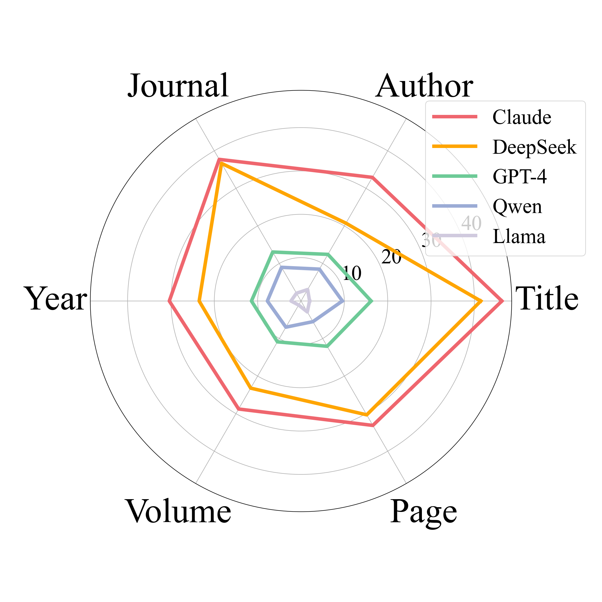
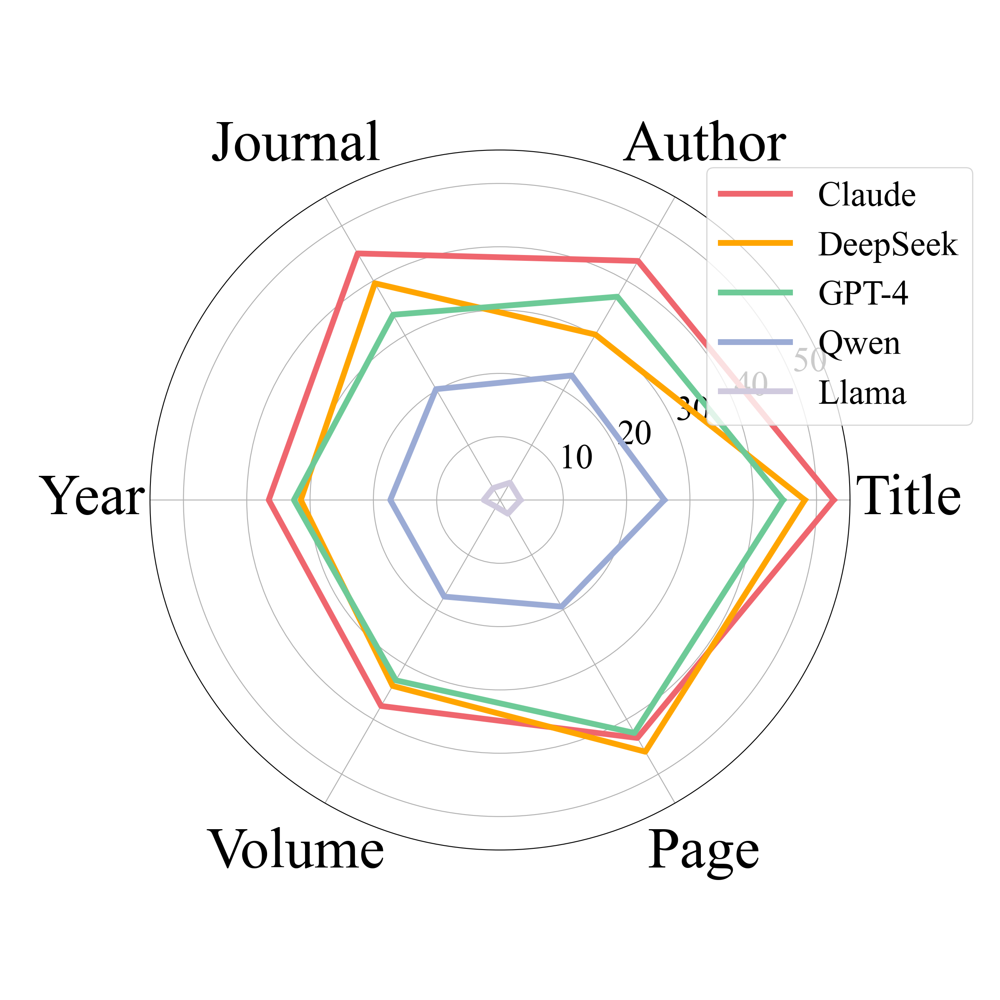
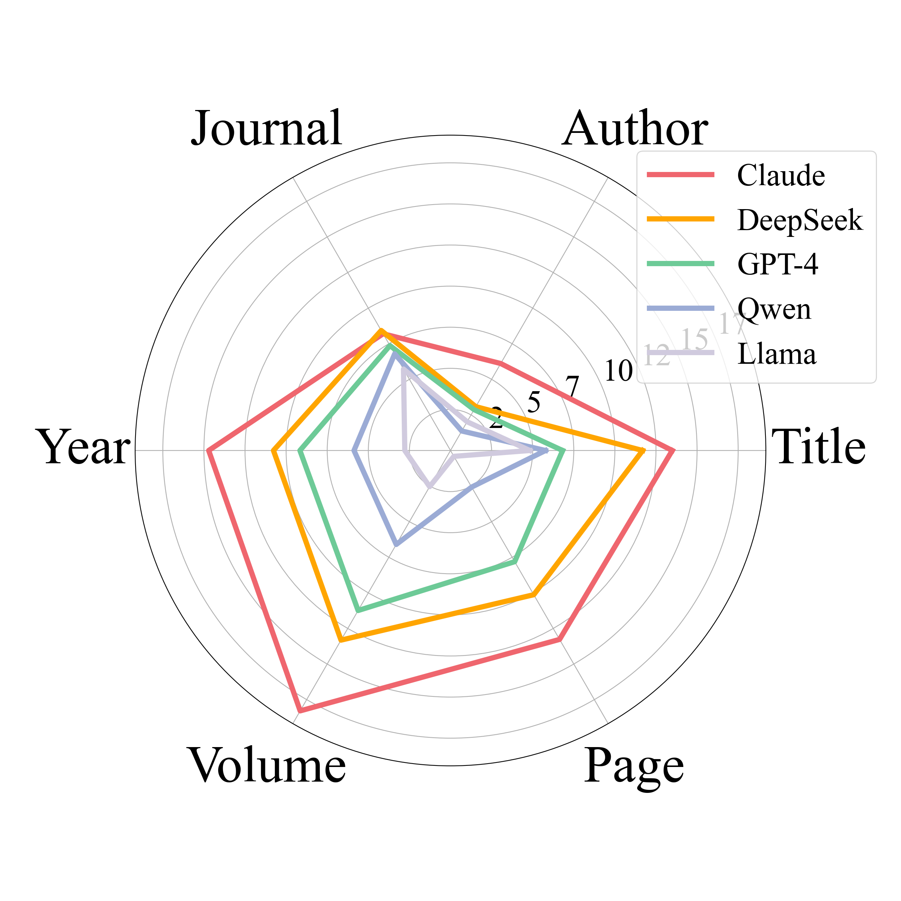
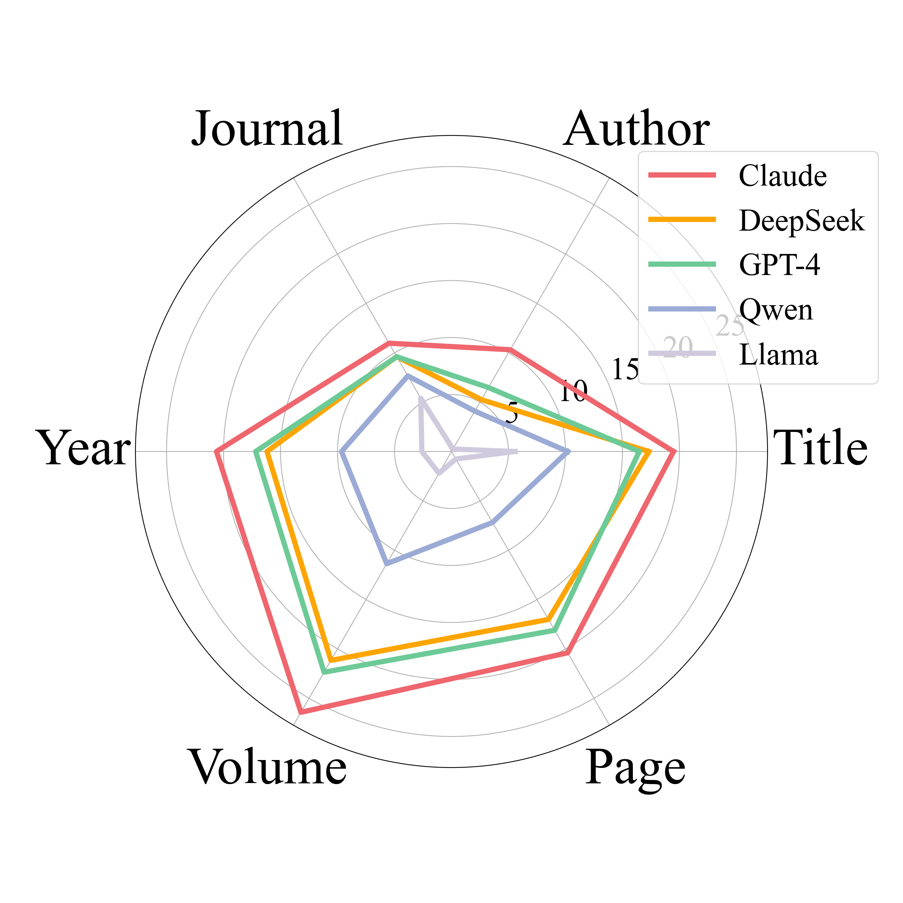

Three tasks evaluation scores across different disciplines
Reference Generation: Precision
Abstract Writing: True
Review Composition: Precision
Literature Review Writing: KPR
Radar chart of the accuracy of LLM-generated references across various dimensions

Compare with Semantic Scholar(T1)

Compare with Semantic Scholar(T3)

Compare with Human-cited References(T1)

Compare with Human-cited References(T3)